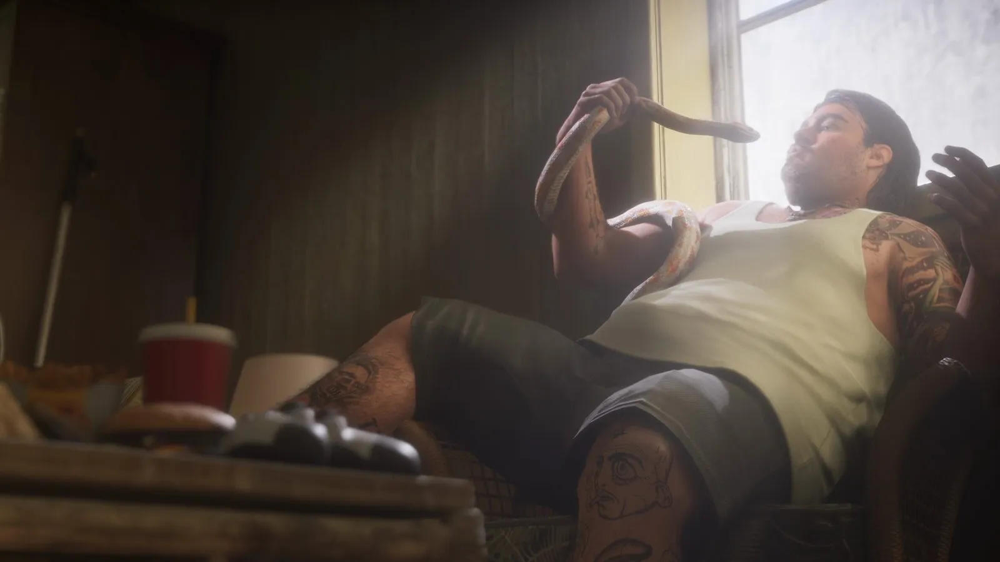
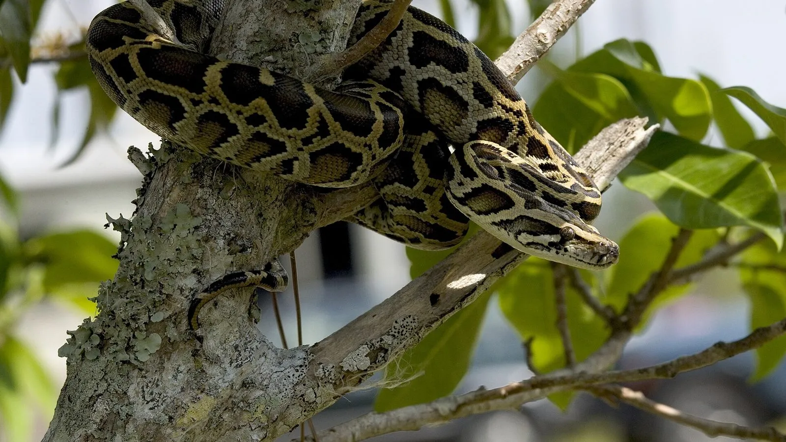
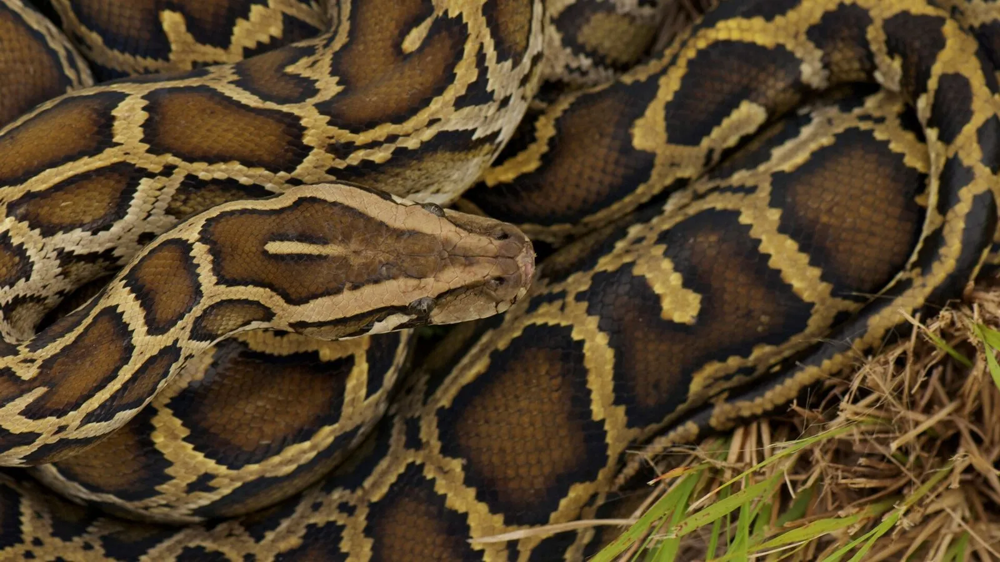

Змея в доме из трейлера GTA 6 и бирманские питоны Флориды
Опубликовано:
Змея дома у жителя Леониды — узнаваемая флоридская тема: питоны попали в дикую природу штата из домашних террариумов. Но вид змеи в трейлере не назван, а Rockstar связь с питонами не подтверждала — это наша трактовка.


- В третьем трейлере GTA 6 мужчина в майке развалился в кресле у окна и держит в руках змею.
- Во Флориде змеи — отдельная большая история: бирманские питоны не местные, они размножились в Эверглейдс.
- По данным FWC, питоны прижились во Флориде из-за сбежавших или выпущенных домашних змей.
- С 2000 года во Флориде поймали и сдали больше 23 000 диких питонов.
- Rockstar вид змеи и прототип не называла.
Что в игре
Третий трейлер GTA 6 вышел 15 октября 2026 года. Около 0:59 — короткий кадр в тёмной комнате: крупный мужчина в майке и шортах полулежит в кресле у окна, на столе перед ним красный стакан и мусор, а в руках — длинная змея.
Кто это и какая это змея, трейлер не говорит. Но сама картинка — человек дома со змеёй — для Флориды очень узнаваемая.
Что в реальности
Самая известная змея Флориды — бирманский питон. Он не местный. Комиссия по охране рыбы и дикой природы Флориды (FWC) пишет прямо: питоны закрепились во Флориде из-за сбежавших или выпущенных домашних питомцев. Выпускать неместных животных на волю в штате запрещено, а владельцы могут без наказания сдать такого питомца по программе Exotic Pet Amnesty.
Теперь питонов ловят. В июле 2020 года FWC и Управление водными ресурсами Южной Флориды объявили, что их программы (Python Action Team и Python Elimination Program) вывезли из Эверглейдс 5 000 питонов. А всего, по данным FWC, с 2000 года во Флориде поймали и сдали больше 23 000 диких бирманских питонов.

Штат проводит соревнование Florida Python Challenge. В 2025 году за 10 дней 934 участника из 30 штатов и Канады поймали рекордные 294 питона. Победитель сдал 60 змей, а самый длинный питон среди призёров — 15 футов 11 дюймов, почти 4,9 метра.
Совпадает и отличается
| Флорида | GTA 6 | |
|---|---|---|
| Змея в доме у человека | Питоны попали в природу из домашних террариумов | 🟡 Да, змея в руках |
| Вид змеи | Бирманский питон | 🔵 В трейлере не назван |
| Охота на питонов | Florida Python Challenge, программы FWC | 🔵 В трейлере не показано |
Источники: Rockstar Games — третий трейлер GTA 6 (15 октября 2026); FWC — сообщение о 5 000 питонах, удалённых из Эверглейдс (28 июля 2020); FWC — «FWC announces results and winners of the 2025 Florida Python Challenge» (13 августа 2025); Wikimedia Commons — фото NPS (Rodney Cammauf) и USGS (Bryan Falk), public domain.
Реальные фото: Фото: Everglades NPS from Homestead, Florida, United States, Public domain · Wikimedia Commons; Фото: Bryan Falk, USGS. Public domain., Public domain · Wikimedia Commons. Кадры игры: Rockstar Games.
Каждый день — одно сравнение: кадр игры рядом с реальным фото. Подписывайтесь:
YouTubeInstagramTikTok